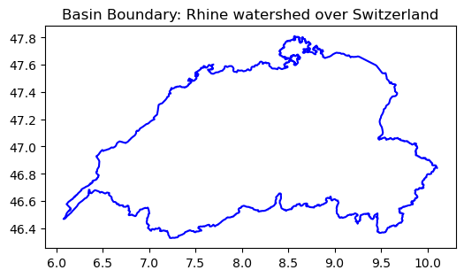
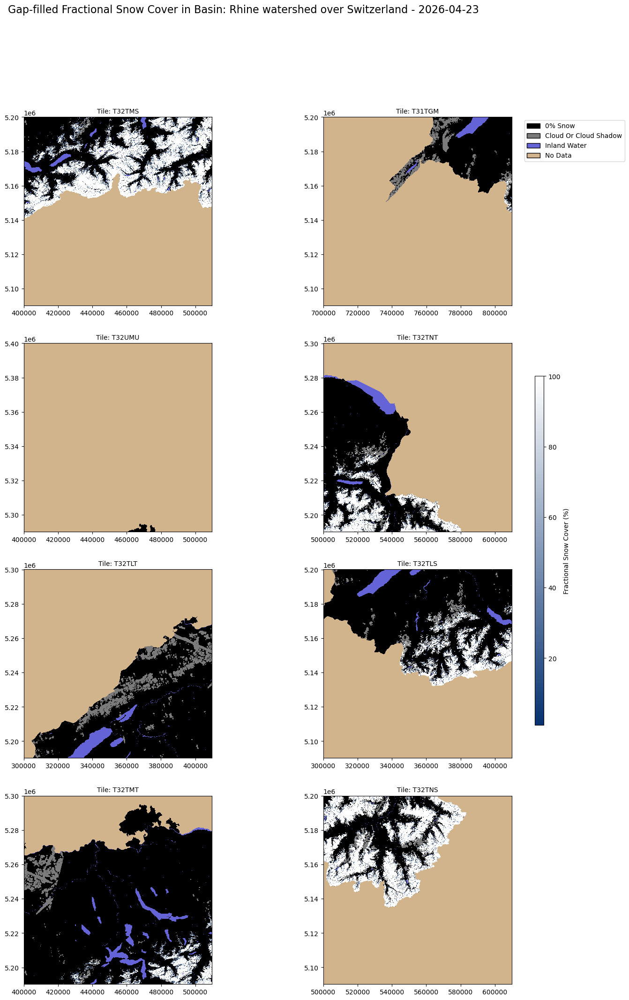
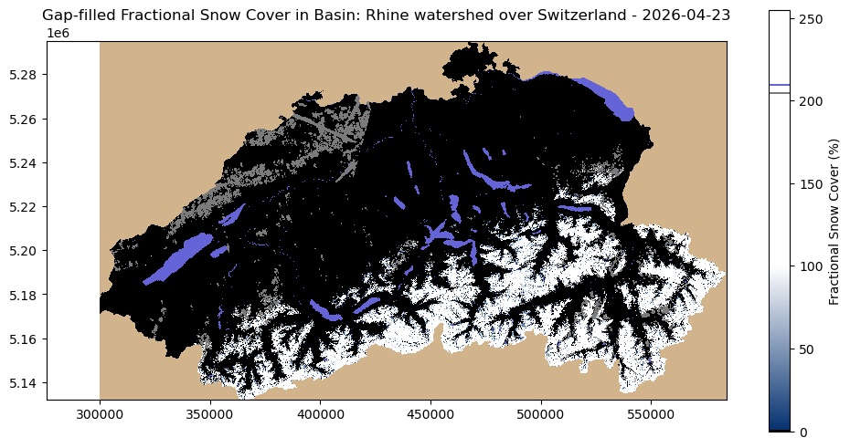
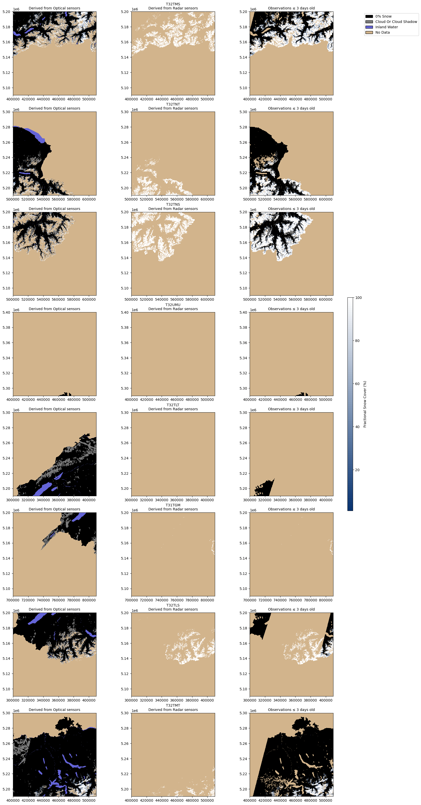
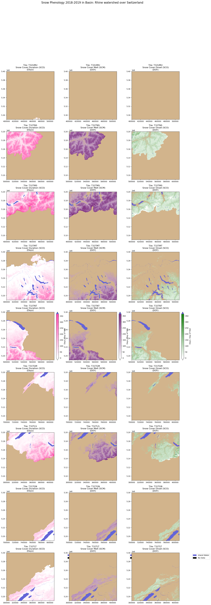

# HTTP requests and API
import requests
from getpass import getpass
# Data management
import pandas as pd
import numpy as np
import json
# Vector and raster data
import geopandas as gpd
import rasterio
from rasterio.mask import mask
# Time and date management
from datetime import datetime, timedelta
import time
# Files management
import os
import zipfile
import glob
# Math tools
import math
# Visualisation tools
import matplotlib.pyplot as plt
from matplotlib.colors import ListedColormap
import matplotlib.patches as mpatches
import matplotlib.colors as mcolors
import matplotlib.cm as cm
# Display in Jupyter notebook
from IPython.display import HTMLSearch and download CLMS HR-Water, Snow and Ice (WSI) snow products using the OData API from the Copernicus Data Space Ecosystem (CDSE)
This Jupyter notebook provides a basic hands-on introduction to searching, downloading, and exploring High Resolution Water, Snow and Ice (HR-WSI) products. It focuses on the use of the Open Data Protocol OData API and is organized into two sections: - A) Getting familiar with the OData API - B) Exploring HR-WSI snow products
Users can first visit the Copernicus Data Space Ecosystem (CDSE) Browser interface to explore and familiarize themselves with the available products.
Authors: Florence Marti & Matthieu Denisselle (Magellium), Cemal Melih Tanis (Finnish Meteorological Institute)
Contact: https://land.copernicus.eu/en/contact-service-helpdesk
Prerequisites: - Before starting, create an account on the CDSE interface: https://dataspace.copernicus.eu/. You will need your credentials in this notebook to download HR-WSI data through the Odata API.
Libraries
Before we begin, we need to make sure that all the required libraries are installed and imported.
A. Discover the CDSE Odata API to access the HR-WSI products
In this section, we will: 1. Explore the available snow datasets 2. Set the search parameters and configure the request 3. Execute the request 4. Download data 5. Modify the request to add a cloud percentage filter
1. The CLMS datasets on the CDSE Odata API
The different CLMS collection datasets are listed here: https://documentation.dataspace.copernicus.eu/Data/CopernicusServices/CLMS.html
More information on the CLMS HR-WSI snow portfolio: https://land.copernicus.eu/en/products/snow
The HR-WSI snow datasets are:
### Snow cover
fsc = {
"short_name": "FSC",
"full_name": "Fractional Snow Cover",
"dataset_id": "clms_wsi_fractional-snow-cover_europe_utm_20m_daily_v2",
}
gfsc = {
"short_name": "GFSC",
"full_name": "Gap-filled Fractional Snow Cover",
"dataset_id": "clms_wsi_gap-filled-fractional-snow-cover_europe_utm_60m_daily_v1",
}
### Snow state
sws = {
"short_name": "SWS",
"full_name": "SAR Wet Snow in high mountain areas",
"dataset_id": "clms_wsi_sar-wet-snow_europe_utm_60m_daily_v2",
}
wds = {
"short_name": "WDS",
"full_name": "Wet/Dry Snow",
"dataset_id": "clms_wsi_wet-dry-snow_europe_utm_60m_daily_v2",
}
### Snow phenology
sps2 = {
"short_name": "SPS2",
"full_name": "Snow Phenology based on Sentinel-2",
"dataset_id": "clms_wsi_snow-phenology-s2_europe_utm_20m_yearly_v1",
}
sps1s2 = {
"short_name": "SPS1S2",
"full_name": "Snow Phenology based on Sentinel-1 & 2 - in high mountain areas",
"dataset_id": "clms_wsi_snow-phenology-s1-s2_europe_utm_60m_yearly_v1",
}
### Cloud cover
cc = {
"short_name": "CC",
"full_name": "Cloud classification Sentinel-2",
"dataset_id": "clms_wsi_cloud-classification_europe_utm_20m_daily_v1",
}
HRWSI_snow_collection = {
"FSC": fsc,
"GFSC": gfsc,
"SWS": sws,
"WDS": wds,
"SPS2": sps2,
"SPS1S2": sps1s2,
"CC": cc,
}2. Set the search parameters and configure the request
# Define which product will be requested
dataset_id = HRWSI_snow_collection["FSC"]["dataset_id"]
# Define start and end date of interest
start_date = "2026-01-01"
end_date = "2026-05-18"
# Define an area of interest as WKT polygon (you can rely on the "create an area of interest" tool in the upper-right panel of the CDSE Browser)
aoi = "POLYGON((6.726379 45.792425,6.726379 45.51982, 7.792053 45.531365,7.789307 45.960697,6.726379 45.792425))"
# Filter for the data collection OData
# uses "greater than" (gt), "less than" (lt) to set the date range
params = {
"$select": "Name,Id", # to only keep the products name, the product ID in the output result
"$filter": (
f"Attributes/OData.CSC.StringAttribute/any(att:att/Name eq 'datasetIdentifier' and att/OData.CSC.StringAttribute/Value eq '{dataset_id}') and "
f"OData.CSC.Intersects(area=geography'SRID=4326;{aoi}') and "
f"ContentDate/Start gt '{start_date}T00:00:00.000Z' and "
f"ContentDate/Start lt '{end_date}T00:00:00.000Z'"
),
"$count": "false", # The count option lets users get the exact number of products matching the query. This option is disabled by default to accelerate the query performance
"$top": 100,
}3. Execute the request
# Function to query the catalogue through the API
def execute_request(params):
api_url = "https://catalogue.dataspace.copernicus.eu/odata/v1/Products"
try:
response = requests.get(api_url, params=params, timeout=30)
response.raise_for_status()
data = response.json()
results = data.get("value", [])
print(f"Number of results: {len(results)}")
except requests.exceptions.HTTPError as http_err:
print(f"HTTP error: {http_err} - Response: {response.text}")
except requests.exceptions.RequestException as err:
print(f"Request error: {err}")
except ValueError:
print("Error decoding JSON response")
return results# Execute the request
results = execute_request(params)
# Display the first lines of the result
pd.DataFrame.from_dict(results).head(5)Number of results: 100| @odata.mediaContentType | Id | Name | |
|---|---|---|---|
| 0 | application/tiff | c09af662-4739-48a6-b769-dcbb81715c83 | CLMS_WSI_FSC_020m_T32TLS_20260425T103811_S2A_V200 |
| 1 | application/tiff | 0605b43f-fe67-4472-b0b1-22fd5fcace3d | CLMS_WSI_FSC_020m_T32TMS_20260425T103810_S2A_V200 |
| 2 | application/tiff | 79d08baa-c6d8-4843-872c-b77e82d90707 | CLMS_WSI_FSC_020m_T32TLS_20260425T102804_S2B_V200 |
| 3 | application/tiff | aa3cad77-e8b7-46dd-89cc-bc312f254fd8 | CLMS_WSI_FSC_020m_T32TLS_20260425T103821_S2A_V200 |
| 4 | application/tiff | d10853ac-c4f0-4ea1-9860-8657c9f19aa5 | CLMS_WSI_FSC_020m_T32TLR_20260425T102817_S2B_V200 |
4. Download the output data
Prepare access token
# Global variables to cache the token and its expiration time
_cached_token = None
_token_expiry = None
TOKEN_URL = "https://identity.dataspace.copernicus.eu/auth/realms/CDSE/protocol/openid-connect/token"
# Function to create a token from your personal credentials
def get_access_token(username: str, password: str) -> str:
"""
Retrieves an OAuth2 access token for CDSE.
Caches the token and only requests a new one if the current one has expired.
"""
global _cached_token, _token_expiry
# Return the cached token if it is still valid (with a 1-minute safety buffer)
if (
_cached_token
and _token_expiry
and datetime.now() < _token_expiry - timedelta(minutes=1)
):
return _cached_token
payload = {
"client_id": "cdse-public",
"username": username,
"password": password,
"grant_type": "password",
}
try:
response = requests.post(TOKEN_URL, data=payload, timeout=10)
response.raise_for_status()
token_data = response.json()
# Cache the token and calculate its precise expiration time
_cached_token = token_data["access_token"]
# CDSE returns 'expires_in' in seconds (usually 600s / 10 mins)
expires_in = token_data.get("expires_in", 600)
_token_expiry = datetime.now() + timedelta(seconds=expires_in)
print(
f"Token generated successfully. Valid until {_token_expiry.strftime('%H:%M:%S')}"
)
return _cached_token
except requests.exceptions.HTTPError:
# erreur HTTP avec réponse serveur exploitable
try:
error_details = response.json()
except Exception:
error_details = response.text
raise RuntimeError(
f"Token request failed (HTTP {response.status_code}): {error_details}"
)
except requests.exceptions.RequestException as e:
# erreurs réseau (timeout, DNS, connexion…)
raise RuntimeError(f"Network error while requesting token: {e}")
except ValueError as e:
# JSON invalide ou champ manquant
raise RuntimeError(f"Invalid response format: {e}")Prepare your credentials and create the token
To download data, you need to have CDSE credentials. - Option A : Create a text file named credentials.txt in the same directory as the Jupyter Notebook. Add your CDSE login details in the following format:
username=email@address.com
password=mypassword- Option B (interactive prompt): If
credentials.txtis missing or unreadable, the script will automatically fallback to secure input prompts usinggetpass.
credentials = {"username": None, "password": None}
try:
# Attempt to read credentials from 'credentials.txt' (option A)
with open("credentials.txt") as f:
credentials = dict(line.strip().split("=", 1) for line in f if line.strip())
except Exception:
# Prompt for credentials if file is not found or fails to parse (option B)
credentials["username"] = getpass("Enter your CDSE username (email): ")
credentials["password"] = getpass("Enter your CDSE password")
# Obtain access token
access_token = get_access_token(credentials["username"], credentials["password"])Token generated successfully. Valid until 11:17:44Query and download a single product
# This download method is adapted from the CDSE OData API documentation:
# https://documentation.dataspace.copernicus.eu/APIs/OData.html#product-download
# We retrieve the product ID from the query results and build the product download URL.
DOWNLOAD_URL_TEMPLATE = (
"https://download.dataspace.copernicus.eu/odata/v1/Products({})/$value"
)
productID = results[0]["Id"]
url = DOWNLOAD_URL_TEMPLATE.format(productID)
print(f"Download product with id {productID}")
print(f"Download url is: {url}")
headers = {"Authorization": f"Bearer {access_token}"}
session = requests.Session()
session.headers.update(headers)
response = session.get(url, headers=headers, stream=True)
with open("product.zip", "wb") as file:
for chunk in response.iter_content(chunk_size=8192):
if chunk:
file.write(chunk)Download product with id c09af662-4739-48a6-b769-dcbb81715c83
Download url is: https://download.dataspace.copernicus.eu/odata/v1/Products(c09af662-4739-48a6-b769-dcbb81715c83)/$valueQuery and download several products
First, define two utility functions that will be used throughout the notebook: - A function to extract data from ZIP files - A function to download products from the catalogue
# Function to unzip the product and extract the full product
def extract_product(file_path):
try:
with zipfile.ZipFile(file_path, "r") as zip_ref:
zip_ref.extractall(".")
except zipfile.BadZipFile:
print(f"Error: {file_path} is not a zip file.")
os.remove(file_path)# Function allowing the downloading of the queried products
def download_products(product, headers, num_downloads):
product_id = product["Id"]
name = product["Name"]
url = DOWNLOAD_URL_TEMPLATE.format(product_id)
file_path = os.path.join(name + ".zip")
if os.path.exists(file_path):
print(f"Zip file already exists: {file_path}")
return num_downloads
with requests.get(url, headers=headers, stream=True) as r:
if r.status_code != 200:
print(r)
print(f"Failed to download {name}: {r.status_code}")
return num_downloads
with open(file_path, "wb") as f:
for chunk in r.iter_content(chunk_size=8192):
f.write(chunk)
extract_product(file_path)
print(f"Zip downloaded and extracted to: {name}")
num_downloads += 1
return num_downloadsDownload a few products:
# Limit to 3 products
products_list = results[:3]
headers = {"Authorization": f"Bearer {access_token}"}
# Download the products and refresh the token regularly (in this example, it is refreshed every 3 downloads)
num_downloads = 1
for i, product in enumerate(products_list, 1):
print(f"[{i}] {product['Name']}")
if num_downloads % 3 == 0:
access_token = get_access_token(
credentials["username"], credentials["password"]
)
headers = {"Authorization": f"Bearer {access_token}"}
num_downloads = download_products(product, headers, num_downloads)[1] CLMS_WSI_FSC_020m_T32TLS_20260425T103811_S2A_V200
Zip downloaded and extracted to: CLMS_WSI_FSC_020m_T32TLS_20260425T103811_S2A_V200
[2] CLMS_WSI_FSC_020m_T32TMS_20260425T103810_S2A_V200
Zip downloaded and extracted to: CLMS_WSI_FSC_020m_T32TMS_20260425T103810_S2A_V200
[3] CLMS_WSI_FSC_020m_T32TLS_20260425T102804_S2B_V200
Zip downloaded and extracted to: CLMS_WSI_FSC_020m_T32TLS_20260425T102804_S2B_V2005. Modify the request to add a cloud percentage filter
HR-WSI products which are based on satellite optical observations are impacted by the cloud cover (for snow products: FSC, GFSC, WDS). One can apply a filter to only keep products with a very high number of usable data.
Other filters can be applied to the CLMS collection datasets. They can be found here: https://catalogue.dataspace.copernicus.eu/odata/v1/Attributes(CLMS)
# You can apply this cloud cover filter using "greater than" (gt), "lower than" (lt), "greater or equal" (ge) or "lower or equal" (le)
CLOUD_COVER_MAX = 50.00
params_cloud = {
"$select": "Name,Id", # to only keep the products name, the product ID in the output result
"$filter": (
f"Attributes/OData.CSC.StringAttribute/any(att:att/Name eq 'datasetIdentifier' and att/OData.CSC.StringAttribute/Value eq '{dataset_id}') and "
f"OData.CSC.Intersects(area=geography'SRID=4326;{aoi}') and "
f"ContentDate/Start gt '{start_date}T00:00:00.000Z' and "
f"ContentDate/Start lt '{end_date}T00:00:00.000Z' and "
f"Attributes/OData.CSC.DoubleAttribute/any(att:att/Name eq 'cloudCover' and att/OData.CSC.DoubleAttribute/Value le {CLOUD_COVER_MAX})"
),
"$expand": "Attributes",
"$count": "false", # The count option lets users get the exact number of products matching the query. This option is disabled by default to accelerate the query performance
"$top": 100,
}# Execute the request
results_cloud = execute_request(params_cloud)
# Display the first lines of the result
pd.DataFrame.from_dict(results_cloud).head(5)Number of results: 100| @odata.mediaContentType | Id | Name | |
|---|---|---|---|
| 0 | application/tiff | c09af662-4739-48a6-b769-dcbb81715c83 | CLMS_WSI_FSC_020m_T32TLS_20260425T103811_S2A_V200 |
| 1 | application/tiff | 0605b43f-fe67-4472-b0b1-22fd5fcace3d | CLMS_WSI_FSC_020m_T32TMS_20260425T103810_S2A_V200 |
| 2 | application/tiff | 79d08baa-c6d8-4843-872c-b77e82d90707 | CLMS_WSI_FSC_020m_T32TLS_20260425T102804_S2B_V200 |
| 3 | application/tiff | aa3cad77-e8b7-46dd-89cc-bc312f254fd8 | CLMS_WSI_FSC_020m_T32TLS_20260425T103821_S2A_V200 |
| 4 | application/tiff | d10853ac-c4f0-4ea1-9860-8657c9f19aa5 | CLMS_WSI_FSC_020m_T32TLR_20260425T102817_S2B_V200 |
B. Explore the HR-WSI snow data
Prerequisite:
A geometry file in the geojson format (.geojson) that describes a water basin.
In this section, we will: 1. Read the geojson file. In this example, we use a vector information derived from the EEA’s WISE WFD (Water Framework Directive) shapefile. 2. Set the search parameters and configure the request, to match the selected water basin’s extent. 3. Execute the request and download the data. 4. Read the downloaded product and crop it based on the basin boundaries. 5. Filter observations with quality layer information: examples with sensor type and observation age. 6. Explore yearly snow products.
1. Read the geometry file
We will use a vector file containing the Rhine river basin that is part of Switzerland. It is preprocessed from The Water Framework Directive (WFD) datasets.
# Define the geometry file
basin_geojson = "odata_download_and_explore_clms_hr-wsi_1_snow_rhine_watershed.geojson"
# Load the geometry
print(f"Reading RiverBasin geojson from {basin_geojson}...")
with open(basin_geojson, "r") as f:
geojson_data = json.load(f)
my_basin = gpd.read_file(basin_geojson)
# Get basin name for plot title
basin_name = "Rhine watershed over Switzerland"
# Plot our basin outline as a reference
fig, ax = plt.subplots(figsize=(6, 6))
my_basin.plot(ax=ax, facecolor="none", edgecolor="blue", linewidth=1.5)
plt.title(f"Basin Boundary: {basin_name}")
plt.show()
# Merge all basin geometries into one geometry
basin_geometry = my_basin.geometry.union_all()
# Simplify geometry
basin_geometry = basin_geometry.simplify(0.05)
# Convert to WKT
basin_wkt = basin_geometry.wktReading RiverBasin geojson from odata_download_and_explore_clms_hr-wsi_1_snow_rhine_watershed.geojson...
2. Set the search parameters and configure the request, to match the selected water basin’s extent.
Instead of generating a generic polygon for our search requests, we can inject our new basin_wkt directly into our CDSE OData API request to find HR-WSI products actively covering our chosen Alpine river basin.
# Set up the parameters
# Modify our query parameters with the WKT geometry and a specific product date to find products intersecting our selected basin
dataset_id = HRWSI_snow_collection["GFSC"]["dataset_id"]
product_date = "2026-04-23"
start_date = product_date
end_date = product_date
CLOUD_COVER_MAX = 30.00
params_basin = {
"$select": "Name,Id", # to only keep the products name, the product ID in the output result
"$filter": (
f"Attributes/OData.CSC.StringAttribute/any(att:att/Name eq 'datasetIdentifier' and att/OData.CSC.StringAttribute/Value eq '{dataset_id}') and "
f"OData.CSC.Intersects(area=geography'SRID=4326;{basin_wkt}') and "
f"ContentDate/Start ge '{start_date}T00:00:00.000Z' and "
f"ContentDate/Start le '{end_date}T23:59:59.999Z' and "
f"Attributes/OData.CSC.DoubleAttribute/any(att:att/Name eq 'cloudCover' and att/OData.CSC.DoubleAttribute/Value le {CLOUD_COVER_MAX})"
),
"$expand": "Attributes",
"$count": "false",
"$top": 100,
}3. Execute the request and download the output data.
# Execute the request
print("Executing query for products intersecting our selected basin...")
try:
basin_results = execute_request(params_basin)
pd.DataFrame.from_dict(basin_results)
except requests.exceptions.HTTPError as http_err:
print(f"HTTP error: {http_err} - Response: {response.text}")
except requests.exceptions.RequestException as err:
print(f"Request error: {err}")Executing query for products intersecting our selected basin...
Number of results: 8if len(basin_results) > 0:
access_token = get_access_token(credentials["username"], credentials["password"])
headers = {"Authorization": f"Bearer {access_token}"}
for product in basin_results:
download_products(product, headers, 0)
else:
print("No intersecting products found to download.")Zip downloaded and extracted to: CLMS_WSI_GFSC_060m_T32TMS_20260423P7D_COMB_V102
Zip downloaded and extracted to: CLMS_WSI_GFSC_060m_T31TGM_20260423P7D_COMB_V102
Zip downloaded and extracted to: CLMS_WSI_GFSC_060m_T32UMU_20260423P7D_COMB_V102
Zip downloaded and extracted to: CLMS_WSI_GFSC_060m_T32TNT_20260423P7D_COMB_V102
Zip downloaded and extracted to: CLMS_WSI_GFSC_060m_T32TLT_20260423P7D_COMB_V102
Zip downloaded and extracted to: CLMS_WSI_GFSC_060m_T32TLS_20260423P7D_COMB_V102
Zip downloaded and extracted to: CLMS_WSI_GFSC_060m_T32TMT_20260423P7D_COMB_V102
Zip downloaded and extracted to: CLMS_WSI_GFSC_060m_T32TNS_20260423P7D_COMB_V1024. Read the downloaded product and crop it based on the basin boundaries.
We use rasterio’s mask tool to crop the local image payload to the true shape/boundary of the river basin we extracted.
We also define a function that reads the colormap provided in each product folder. Legends are provided in .clr, .qml, .sld and .lyrx formats. Here, we use the .clr legend file.
# Define a function to load the colormap from the legend .clr file
def load_colormap(product_dir, search_pattern):
"""Loads an official colormap from the product's legend folder."""
clr_files = glob.glob(os.path.join(product_dir, "legend", search_pattern))
if not clr_files:
return None, None
try:
colors = np.zeros((256, 4))
labels = {}
with open(clr_files[0], "r") as f:
for line in f:
parts = line.strip().split()
if len(parts) >= 4:
try:
val = int(parts[0])
if val < 256:
r, g, b = (
float(parts[1]) / 255.0,
float(parts[2]) / 255.0,
float(parts[3]) / 255.0,
)
a = 1.0
if len(parts) > 4:
try:
a = float(parts[4]) / 255.0
except ValueError:
pass # Ignore if alpha column contains text
colors[val] = [r, g, b, a]
# Parse label (text after RGBA)
label_start_idx = (
5 if len(parts) > 5 and parts[4].isdigit() else 4
)
if len(parts) > label_start_idx:
labels[val] = " ".join(parts[label_start_idx:])
except ValueError:
continue # Ignore rows that don't start with an integer
print(f"Loaded official colormap from {os.path.basename(clr_files[0])}")
return ListedColormap(colors), labels
except Exception as e:
print(f"Error loading colormap: {e}")
return None, NoneDisplay each GFSC product in a separate subplot by masking the raster with the basin geometry
All snow products include several layers, including quality layers. In this example, we will display the GF layer in .tif format, which contains the snow fraction map.
# Compute the layout of the subplot grid
num_tiles = len(basin_results)
num_cols = 2
num_rows = math.ceil(num_tiles / num_cols)
# Create the figure and subplot grid
fig, axes = plt.subplots(num_rows, num_cols, figsize=(16, 6 * num_rows), squeeze=False)
# Define the color used for NoData pixels
NODATA_COLOR = "tan"
# Initialize colormap variables
custom_cmap, custom_labels = None, None
# Loop through all downloaded products
for idx, result in enumerate(basin_results):
# Determine subplot position
row = idx // num_cols
col = idx % num_cols
ax = axes[row, col]
# Get the product directory name
product_dir = result["Name"]
# Skip missing directories
if not product_dir or not os.path.isdir(product_dir):
ax.set_title(f"Not found: {product_dir}")
ax.axis("off")
continue
# Load the custom colormap only once
if custom_cmap is None:
custom_cmap, custom_labels = load_colormap(product_dir, "*_GF.clr")
# Search for the gap-filled snow cover raster with suffix GF.tif
gf_file = glob.glob(os.path.join(product_dir, "*_GF.tif"))
# Skip if the raster is missing
if not gf_file:
ax.set_title(f"Missing TIF: {product_dir}")
ax.axis("off")
continue
# Open the raster file
with rasterio.open(gf_file[0]) as src:
# Reproject the basin geometry if CRS differs from raster CRS
if my_basin.crs != src.crs:
my_basin_proj = my_basin.to_crs(src.crs)
else:
my_basin_proj = my_basin
try:
# Mask the raster using the basin geometry
out_image, out_transform = mask(src, my_basin_proj.geometry, crop=False)
# Extract the first raster band
gf_data = out_image[0]
if custom_cmap is not None:
# Use the product colormap
cmap = custom_cmap
gf_display = gf_data
vmax = 255
else:
# Use a default blue colormap
cmap = plt.cm.Blues
# Define colors for invalid or saturated values
cmap.set_bad(color=NODATA_COLOR)
cmap.set_over(color="red")
# Mask values above 100
gf_display = np.ma.masked_where(gf_data > 100, gf_data)
vmax = 100
# Compute raster extent for georeferenced displays
extent = (
out_transform[2],
out_transform[2] + out_transform[0] * gf_data.shape[1],
out_transform[5] + out_transform[4] * gf_data.shape[0],
out_transform[5],
)
# Set subplot background color
ax.set_facecolor(NODATA_COLOR)
# Display the raster
im = ax.imshow(
gf_display,
cmap=cmap,
vmin=0,
vmax=vmax,
interpolation="nearest",
extent=extent,
)
# Extract tile identifier from product name
title_prefix = (
product_dir.split("_")[4]
if len(product_dir.split("_")) > 4
else product_dir
)
# Set subplot title
ax.set_title(f"Tile: {title_prefix}", fontsize=10)
except ValueError:
# Handle cases where the basin does not intersect the raster
ax.set_title(f"No basin overlap for {product_dir}", fontsize=10)
ax.axis("off")
# Hide empty subplots if the grid is not fully used
for idx in range(num_tiles, num_rows * num_cols):
row = idx // num_cols
col = idx % num_cols
axes[row, col].axis("off")
# Add a global figure title
fig.suptitle(
f"Gap-filled Fractional Snow Cover in Basin: {basin_name} - {product_date}",
fontsize=16,
)
# Create colorbar and legend if a custom colormap exists
if custom_labels is not None:
sm = cm.ScalarMappable(
norm=mcolors.Normalize(vmin=1, vmax=100),
cmap=ListedColormap(custom_cmap.colors[1:101]),
)
cbar = fig.colorbar(
sm, ax=axes.ravel().tolist(), fraction=0.015, pad=0.04, aspect=40
)
cbar.set_label("Fractional Snow Cover (%)")
legend_patches = []
for v, lbl in custom_labels.items():
if v == 0 or v > 100:
c = NODATA_COLOR if v == 255 else custom_cmap.colors[v]
legend_patches.append(
mpatches.Patch(facecolor=c, label=lbl.title(), edgecolor="black")
)
if legend_patches:
axes[0, -1].legend(
handles=legend_patches, bbox_to_anchor=(1.05, 1), loc="upper left"
)
else:
# Add a default colorbar if no custom colormap exists
if "im" in locals():
fig.colorbar(
im, ax=axes.ravel().tolist(), fraction=0.015, pad=0.04, label="Pixel Values"
)
plt.show()Loaded official colormap from clms_wsi_gap-filled-fractional-snow-cover_europe_utm_60m_daily_v1_GF.clr
Display all GFSC product in the same plot by masking the raster with the basin geometry
# Create a single figure
fig, ax = plt.subplots(figsize=(12, 12))
NODATA_COLOR = "tan"
custom_cmap, custom_labels = None, None
# Loop through all products
for result in basin_results:
product_dir = result["Name"]
if not product_dir or not os.path.isdir(product_dir):
continue
# Load colormap only once
if custom_cmap is None:
custom_cmap, custom_labels = load_colormap(product_dir, "*_GF.clr")
gf_file = glob.glob(os.path.join(product_dir, "*_GF.tif"))
if not gf_file:
continue
with rasterio.open(gf_file[0]) as src:
# Reproject basin if necessary
if my_basin.crs != src.crs:
my_basin_proj = my_basin.to_crs(src.crs)
else:
my_basin_proj = my_basin
try:
# Mask raster with basin geometry
out_image, out_transform = mask(src, my_basin_proj.geometry, crop=False)
gf_data = out_image[0]
# Configure colormap
if custom_cmap is not None:
# Copy colormap to safely modify bad values
cmap = custom_cmap.copy()
# Display NoData pixels in tan color
cmap.set_bad(color=NODATA_COLOR)
# Mask NoData values
gf_display = np.ma.masked_where(gf_data == 255, gf_data)
vmax = 255
else:
cmap = plt.cm.Blues
gf_display = np.ma.masked_where(gf_data > 100, gf_data)
vmax = 100
# Compute raster extent
extent = (
out_transform[2],
out_transform[2] + out_transform[0] * gf_data.shape[1],
out_transform[5] + out_transform[4] * gf_data.shape[0],
out_transform[5],
)
# Plot tile on the same axes
im = ax.imshow(
gf_display,
cmap=cmap,
vmin=0,
vmax=vmax,
interpolation="nearest",
extent=extent,
)
except ValueError:
continue
# Add title
ax.set_title(
f"Gap-filled Fractional Snow Cover in Basin: {basin_name} - {product_date}"
)
# Add colorbar
fig.colorbar(im, ax=ax, label="Fractional Snow Cover (%)", shrink=0.5)
# Get basin bounds
xmin, ymin, xmax, ymax = my_basin_proj.total_bounds
# Fix map extent
ax.set_xlim(xmin, xmax)
ax.set_ylim(ymin, ymax)
# Display final figure
plt.show()Loaded official colormap from clms_wsi_gap-filled-fractional-snow-cover_europe_utm_60m_daily_v1_GF.clr
5. Filter observations with quality layer informations: by sensor type (Optical vs. Radar) and observation age (how out-dated the gap-filled pixels are).
The Gap-filled GFSC product generates a continuous snow cover layer combining several inputs. The following .tif layers contain metadata explaining the origin of each pixel: - _QAFLAGS.tif: Bit-encoded quality flags. Bit 7 tells us if the pixel came from an Optical sensor (0) vs a Radar sensor (1). - _AT.tif: Unix timestamp returning exactly when the pixel was acquired. We can differentiate pixels retrieved more than a few days ago.
# Number of products to display
num_tiles = len(basin_results)
# Create a figure with 3 columns for each product:
# - Optical-derived snow cover
# - Radar-derived snow cover
# - Recent observations only
fig, axes = plt.subplots(num_tiles, 3, figsize=(18, 5 * num_tiles), squeeze=False)
# Loop through all products
for idx, product in enumerate(basin_results):
# Get product directory
product_dir = product["Name"]
# Search for required raster files
qa_file = glob.glob(os.path.join(product_dir, "*_QAFLAGS.tif"))
at_file = glob.glob(os.path.join(product_dir, "*_AT.tif"))
gf_file = glob.glob(os.path.join(product_dir, "*_GF.tif"))
# Skip products with missing files
if not (qa_file and at_file and gf_file):
for col in range(3):
axes[idx, col].set_title(f"Missing data: {product_dir}")
continue
try:
# Open all raster products
with rasterio.open(gf_file[0]) as src_gf, rasterio.open(
qa_file[0]
) as src_qa, rasterio.open(at_file[0]) as src_at:
# Reproject basin geometry if CRS differs from raster CRS
if my_basin.crs != src_gf.crs:
my_basin_proj = my_basin.to_crs(src_gf.crs)
else:
my_basin_proj = my_basin
# Mask rasters using the basin geometry
gf_image, _ = mask(src_gf, my_basin_proj.geometry, crop=False)
qa_image, out_transform = mask(src_qa, my_basin_proj.geometry, crop=False)
at_image, _ = mask(src_at, my_basin_proj.geometry, crop=False)
# Extract raster arrays
gf_data = gf_image[0]
qa_data = qa_image[0]
at_data = at_image[0]
# Extract Bit 7 for sensor type (0 = optical observation, 1 = radar observation)
is_radar = (qa_data >> 7) & 1
# Compute pixel age: observation date midnight - _AT.tif pixel timestamp
date_str = product_dir.split("_")[5][:8]
obs_date = datetime.strptime(date_str, "%Y%m%d")
midnight_unix = time.mktime(obs_date.timetuple())
# Any acquisition timestamp during the product date should map to an age of 0.
# We add 1 day (86400 seconds) to find the end of the day, calculate the difference, and floor it downhill.
end_of_day_unix = midnight_unix + (60 * 60 * 24)
age_days = np.floor((end_of_day_unix - at_data) / (60 * 60 * 24))
age_days = np.maximum(
0, age_days
) # clamp negative values in case pixels are slightly newer
# Compute raster spatial extent
extent = (
out_transform[2],
out_transform[2] + out_transform[0] * qa_data.shape[1],
out_transform[5] + out_transform[4] * qa_data.shape[0],
out_transform[5],
)
# Configure display settings
if "custom_cmap" in locals() and custom_cmap is not None:
# Use official product colormap
opts = dict(
cmap=custom_cmap,
vmin=0,
vmax=255,
interpolation="nearest",
extent=extent,
)
# Keep only optical-derived pixels
# Replace excluded pixels with NoData value (255)
gf_optical = np.where(is_radar == 0, gf_data, 255)
# Keep only radar-derived pixels
gf_radar = np.where(is_radar == 1, gf_data, 255)
# Keep only recent observations (≤ 3 days old)
gf_recent = np.where(age_days <= 3.0, gf_data, 255)
else:
# Use default blue colormap
opts = dict(cmap="Blues", vmin=0, vmax=100, extent=extent)
# Replace excluded pixels with NaN
gf_optical = np.where(is_radar == 0, gf_data, np.nan)
gf_radar = np.where(is_radar == 1, gf_data, np.nan)
gf_recent = np.where(age_days <= 3.0, gf_data, np.nan)
# Mask out 'no data'/clouds again
gf_optical = np.ma.masked_where(
(gf_optical > 100) | np.isnan(gf_optical), gf_optical
)
gf_radar = np.ma.masked_where(
(gf_radar > 100) | np.isnan(gf_radar), gf_radar
)
gf_recent = np.ma.masked_where(
(gf_recent > 100) | np.isnan(gf_recent), gf_recent
)
# Set the axes backgrounds for masked out/transparent areas
for col in range(3):
axes[idx, col].set_facecolor(NODATA_COLOR)
# Display optical-derived snow cover
im0 = axes[idx, 0].imshow(gf_optical, **opts)
product_tile = product_dir.split("_")[4]
axes[idx, 0].set_title(f"Derived from Optical sensors", fontsize=10)
# Display radar-derived snow cover
im1 = axes[idx, 1].imshow(gf_radar, **opts)
axes[idx, 1].set_title(
f"{product_tile}\nDerived from Radar sensors", fontsize=10
)
# Display recent observations only
im2 = axes[idx, 2].imshow(gf_recent, **opts)
axes[idx, 2].set_title(f"Observations ≤ 3 days old", fontsize=10)
except ValueError:
for col in range(3):
axes[idx, col].set_title(f"No basin overlap for {product_dir}", fontsize=10)
# Create legends and colorbars
if "custom_labels" in locals() and custom_labels is not None:
# Shared primary colorbar covering all axes restricted to the 1-100 snow fraction range
sm = cm.ScalarMappable(
norm=mcolors.Normalize(vmin=1, vmax=100),
cmap=ListedColormap(custom_cmap.colors[1:101]),
)
cbar = fig.colorbar(
sm, ax=axes.ravel().tolist(), fraction=0.015, pad=0.04, aspect=40
)
cbar.set_label("Fractional Snow Cover (%)")
# Create a supplementary categorical legend for special values
legend_patches = []
for v, lbl in custom_labels.items():
if v == 0 or v > 100: # Grab 0% snow, clouds, water, nodata
c = NODATA_COLOR if v == 255 else custom_cmap.colors[v]
legend_patches.append(
mpatches.Patch(facecolor=c, label=lbl.title(), edgecolor="black")
)
# Add legend to the figure
if legend_patches:
# Anchor next to the rightmost axis of the top row (or overall figure)
axes[0, -1].legend(
handles=legend_patches, bbox_to_anchor=(1.35, 1), loc="upper left"
)
else:
# Fallback colorbar if no custom colormap exists
fig.colorbar(
im2, ax=axes.ravel().tolist(), fraction=0.015, pad=0.04, label="Pixel Values"
)
# Display final figure
plt.show()
6. Explore Snow Phenology (SPS2) Products
Now let’s query and explore the Snow Phenology yearly product for 2018-2019 hydrological year. We will download the product overlapping our selected river basin and visualize layers like SCD (Snow Cover Duration), SCM (Snow Cover Melt), and SCO (Snow Cover Onset).
# Select SPS2 Dataset ID
dataset_id_sps = HRWSI_snow_collection["SPS2"]["dataset_id"]
# Yearly product, query for 2018
start_date = "2018-01-01"
end_date = "2018-12-31"
params_sps = {
"$select": "Name,Id", # to only keep the products name, the product ID in the output result
"$filter": (
f"Attributes/OData.CSC.StringAttribute/any(att:att/Name eq 'datasetIdentifier' and att/OData.CSC.StringAttribute/Value eq '{dataset_id_sps}') and "
f"OData.CSC.Intersects(area=geography'SRID=4326;{basin_wkt}') and "
f"ContentDate/Start ge '{start_date}T00:00:00.000Z' and "
f"ContentDate/Start le '{end_date}T23:59:59.999Z'"
),
"$expand": "Attributes",
"$count": "false",
"$top": 100,
}
print("Executing query for SPS2 products intersecting our selected basin...")
try:
sps_results = execute_request(params_sps)
except Exception as e:
print(f"Request error: {e}")
if len(sps_results) > 0:
print(f"Downloading intersecting SPS2 products...")
access_token = get_access_token(credentials["username"], credentials["password"])
headers_sps = {"Authorization": f"Bearer {access_token}"}
for product in sps_results:
if os.path.exists(product["Name"]):
print(
f"Product directory already exists, skipping download: {product['Name']}"
)
continue
download_products(product, headers_sps, 0)
else:
print("No intersecting SPS2 products found to download.")Executing query for SPS2 products intersecting our selected basin...
Number of results: 9
Downloading intersecting SPS2 products...
Zip downloaded and extracted to: CLMS_WSI_SP_020m_T32UMU_20180901P1Y_S2_V100
Zip downloaded and extracted to: CLMS_WSI_SP_020m_T32TNS_20180901P1Y_S2_V100
Zip downloaded and extracted to: CLMS_WSI_SP_020m_T32TMS_20180901P1Y_S2_V100
Zip downloaded and extracted to: CLMS_WSI_SP_020m_T32TMT_20180901P1Y_S2_V100
Zip downloaded and extracted to: CLMS_WSI_SP_020m_T32TNT_20180901P1Y_S2_V100
Zip downloaded and extracted to: CLMS_WSI_SP_020m_T31TGM_20180901P1Y_S2_V100
Zip downloaded and extracted to: CLMS_WSI_SP_020m_T32TLS_20180901P1Y_S2_V100
Zip downloaded and extracted to: CLMS_WSI_SP_020m_T31TGN_20180901P1Y_S2_V100
Zip downloaded and extracted to: CLMS_WSI_SP_020m_T32TLT_20180901P1Y_S2_V100Display each SPS2 product in a separate subplot by masking the raster with the basin geometry
First set a function to read the official color map of the product.
# Define a function to load the colormap from the legend .clr file
def load_colormap_sps(product_dir, search_pattern):
"""Loads an official colormap specifically handling large values (> 255) typically found in DOY layers (e.g. 365, 65535 NodeData)."""
clr_files = glob.glob(os.path.join(product_dir, "legend", search_pattern))
if not clr_files:
return None, None
try:
color_dict = {}
labels = {}
with open(clr_files[0], "r") as f:
for line in f:
parts = line.strip().split()
if len(parts) >= 4 and parts[0].isdigit():
try:
val = int(parts[0])
r, g, b = (
float(parts[1]) / 255.0,
float(parts[2]) / 255.0,
float(parts[3]) / 255.0,
)
a = 1.0
if len(parts) > 4:
try:
a = float(parts[4]) / 255.0
except ValueError:
pass
color_dict[val] = (r, g, b, a)
label_start_idx = (
5 if len(parts) > 5 and parts[4].isdigit() else 4
)
if len(parts) > label_start_idx:
labels[val] = " ".join(parts[label_start_idx:])
except ValueError:
continue
return color_dict, labels
except Exception as e:
print(f"Error loading colormap: {e}")
return None, NoneThen prepare the plots after the download
if len(sps_results) > 0:
num_tiles_sps = len(sps_results)
print(f"Plotting Snow Phenology layers for {num_tiles_sps} products...")
fig, axes = plt.subplots(
num_tiles_sps, 3, figsize=(18, 6 * num_tiles_sps), squeeze=False
)
NODATA_COLOR = "tan"
custom_cmaps, custom_labelss = [None, None, None], [
None,
None,
None,
] # separate colormaps for each layer type (SCD, SCM, SCO)
for idx, result in enumerate(sps_results):
sps_dir = result["Name"]
if not sps_dir or not os.path.isdir(sps_dir):
for col in range(3):
axes[idx, col].set_title(f"Not found: {sps_dir}", fontsize=12)
axes[idx, col].axis("off")
continue
scd_file = glob.glob(os.path.join(sps_dir, "*_SCD.tif"))
scm_file = glob.glob(os.path.join(sps_dir, "*_SCM.tif"))
sco_file = glob.glob(os.path.join(sps_dir, "*_SCO.tif"))
if not (scd_file and scm_file and sco_file):
for col in range(3):
axes[idx, col].set_title(f"Missing layers: {sps_dir}", fontsize=12)
axes[idx, col].axis("off")
continue
layers = [
(scd_file[0], "Snow Cover Duration (SCD)\n(Days)", "*-SCD.clr"),
(scm_file[0], "Snow Cover Melt (SCM)\n(DOY)", "*-SCM.clr"),
(sco_file[0], "Snow Cover Onset (SCO)\n(DOY)", "*-SCO.clr"),
]
for i, (tiff_path, title, clr_pattern) in enumerate(layers):
ax = axes[idx, i]
if custom_cmaps[i] is None or custom_labelss[i] is None:
custom_cmap, custom_labels = load_colormap_sps(sps_dir, clr_pattern)
custom_cmaps[i] = custom_cmap
custom_labelss[i] = custom_labels
else:
custom_cmap, custom_labels = custom_cmaps[i], custom_labelss[i]
with rasterio.open(tiff_path) as src:
if my_basin.crs != src.crs:
my_basin_proj = my_basin.to_crs(src.crs)
else:
my_basin_proj = my_basin
try:
out_image, out_transform = mask(
src, my_basin_proj.geometry, crop=False
)
layer_data = out_image[0]
extent = (
out_transform[2],
out_transform[2] + out_transform[0] * layer_data.shape[1],
out_transform[5] + out_transform[4] * layer_data.shape[0],
out_transform[5],
)
ax.set_facecolor(NODATA_COLOR)
if custom_cmap is not None:
# Extract bounded colormap for values 1 to 366
valid_min = 0
valid_max = min(
max(
[k for k in custom_cmap.keys() if k <= 366], default=366
),
366,
)
cmap_colors = [
custom_cmap.get(v, (1, 1, 1, 0))
for v in range(valid_min, valid_max + 1)
]
cmap = ListedColormap(cmap_colors)
# Specify out of bounds colors using matplotlib native tools
cmap.set_over(
custom_cmap.get(420, (0.4, 0.4, 0.8, 1))
) # e.g. inland water
cmap.set_bad(
custom_cmap.get(65535, (0.8, 0.8, 0.8, 1))
) # e.g. nodata
cmap.set_bad(color=NODATA_COLOR)
# Map categorical limits explicitly
gf_display = layer_data.copy()
gf_display[gf_display == 420] = (
valid_max + 1
) # mapped to 'over'
masked_data = np.ma.masked_where(
gf_display == 65535, gf_display
)
im = ax.imshow(
masked_data,
cmap=cmap,
vmin=valid_min,
vmax=valid_max,
interpolation="nearest",
extent=extent,
)
else:
# Fallback if no .clr found
masked_data = np.ma.masked_where(
(layer_data == 0) | (layer_data > 366), layer_data
)
cmap = plt.get_cmap("viridis").copy()
cmap.set_bad(color=NODATA_COLOR)
im = ax.imshow(
masked_data,
cmap=cmap,
interpolation="nearest",
extent=extent,
)
title_prefix = (
sps_dir.split("_")[4]
if len(sps_dir.split("_")) > 4
else sps_dir
)
ax.set_title(f"Tile: {title_prefix}\n{title}", fontsize=12)
# Add colorbar appropriately
if idx == num_tiles_sps - 1:
if custom_labels is not None:
cbar = fig.colorbar(
im,
ax=axes[:, i],
fraction=0.046,
pad=0.04,
extend="both",
)
cbar.set_label("Days / Day of Year")
# Legends for categorical values appropriately
legend_patches = []
for v in sorted(custom_cmap.keys()):
if v > 366:
if v in custom_labels:
c = custom_cmap[v]
legend_patches.append(
mpatches.Patch(
color=c,
label=custom_labels[v].title(),
edgecolor="black",
)
)
if legend_patches:
# Display one legend next to the colorbar
ax.legend(
handles=legend_patches,
bbox_to_anchor=(1.25, 1),
loc="upper left",
)
else:
cbar = fig.colorbar(
im, ax=axes[:, i], fraction=0.046, pad=0.04
)
cbar.set_label("Days / Day of Year")
except ValueError:
ax.set_title(f"No basin overlap:\n{title}", fontsize=12)
ax.axis("off")
fig.suptitle(f"Snow Phenology 2018-2019 in Basin: {basin_name}", fontsize=16)
plt.show()Plotting Snow Phenology layers for 9 products.../tmp/ipykernel_248031/2115000927.py:104: UserWarning: Setting the 'color' property will override the edgecolor or facecolor properties.
legend_patches.append(mpatches.Patch(color=c, label=custom_labels[v].title(), edgecolor='black'))
/tmp/ipykernel_248031/2115000927.py:104: UserWarning: Setting the 'color' property will override the edgecolor or facecolor properties.
legend_patches.append(mpatches.Patch(color=c, label=custom_labels[v].title(), edgecolor='black'))
/tmp/ipykernel_248031/2115000927.py:104: UserWarning: Setting the 'color' property will override the edgecolor or facecolor properties.
legend_patches.append(mpatches.Patch(color=c, label=custom_labels[v].title(), edgecolor='black'))
SUMMARY
This notebook demonstrates how to access, filter, download, and visualize HR-WSI snow products using the OData API from the Copernicus Data Space Ecosystem (CDSE). Although focused on snow products, the workflow can be adapted to other HR-WSI datasets provided the corresponding OData DatasetID is known.
The notebook includes examples of querying and downloading products based on: - A specific dataset - A user-defined date range - An Area of Interest (AOI) defined either by: - a WKT geometry, or - a GEOJSON file - A maximum cloud cover threshold
In addition, the notebook demonstrates how to: - Visualize HR-WSI snow products with their associated legends - Display data at both: - Sentinel-2 tile level, and - AOI level - Plot products clipped to a user-defined shapefile - Use quality layers to filter the information according to selected quality criteria